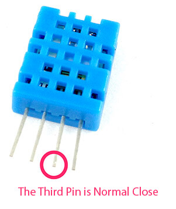
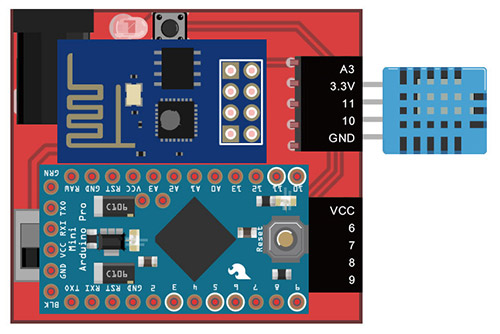
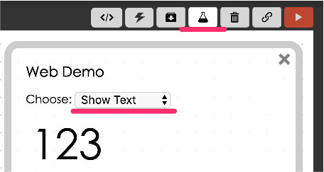
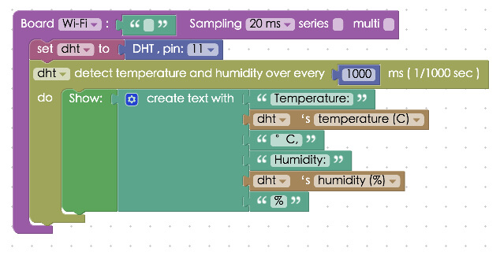
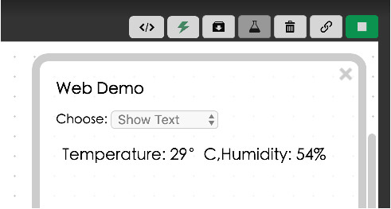

Project Example 10: DHT Sensor
The DHT sensor is a basic digital temperature and humidity sensor. It uses a capacitive humidity sensor and a thermistor to measure the surrounding air, and generates a digital signal. The signal can be converted for practical and useful real-time analysis when connected to CSS, D3.js, Google Chart, or a databse. Let's see how it works!
Video Tutorial
Check the video tutorial here:
The Circuit
The DHT sensor has 4 pins, and the connections are simple. Connect the first pin to the 3.3V power, the second pin to the IO 11 data input pin, and the right most pin to ground. Note that the third pin is N/C.

You can connect the DHT sensor to either the Webduino Mark 1 or to a breadboard.
Webduino Mark 1 Circuit diagram:

Webduino Fly Circuit diagram:

Reference image:

Instruction of Webduino Blockly
Open the page: https://blockly.webduino.io/?lang=en to acces Webduino Blockly. First, you will need to use the "Web Demo Area" to demonstrate the value of temperature or humidity. So click "Web Demo Area" and choose "Show Text" in the drop-down list.

Drag a "board" block into the workspace, and type in the name of your Webduino board. Combine a "DHT sensor" block, set the name as DHT, and set the "pin" to 11. Finally, set the DHT to detect temperature and humidity evey 1000ms.

Each "Show Text" block has only one blank connection point; however, you need to create more blank connectors if you want to show both humidity and temperature values at the same time. Find the "Create Text With" block in the "Standard" drop down menu under "Text", click the blue gear, and select the amount of blank connectors you'll need.

Key in all the boxes as shown below.

You can also adjust the text size and line height by using blocks. Here we set both values to 20.

After you finish creating the block stack, check your "device's status" before you "Run" all of the blocks. Then you can start checking the results of your DHT sensor in the web demo area! Check your stack setup with this example here: https://blockly.webduino.io/?lang=en#-KTO4n5BTnHAOczEhG5Z

Code Explanation (Check Webduino Bin, Check Device Status)
Include webduino-all.min.js in the header of your html files in order to support all the Webduino's components. If the codes are generated by Webduino Blockly, you also have to include webduino-blockly.js in your files.
<script src="https://webduino.io/components/webduino-js/dist/webduino-all.min.js"></script>
<script src="https://webduinoio.github.io/webduino-blockly/webduino-blockly.js"></script>
In HTML, we use a span tag for showing the results.
<span id="demo-area-01-show">123</span>
Then we use the JavaScript method read() for measuring temperature and humidity. The first parameter of read() points to the callback function. The second parameter represents the time interval, which is 1000 ms, in this case. Finally we use innerHTML to display the text and style to change the line height and font size.
var dht;
boardReady('', function (board) {
board.samplingInterval = 20;
dht = getDht(board, 11);
document.getElementById("demo-area-01-show").style.fontSize = 20+"px";
document.getElementById("demo-area-01-show").style.lineHeight = 20+"px";
dht.read(function(evt){
document.getElementById("demo-area-01-show").innerHTML = (['temperature: ',dht.temperature,'degrees, ','humidity: ',dht.humidity,'%'].join(''));
}, 1000);
});
This was the example of how to use DHT sensor to detect the humidity and temperature, we hope you enjoyed it!
Webduino Bin: http://bin.webduino.io/qagoz/edit?html,css,js,output
Stack setup: https://blockly.webduino.io/?lang=en#-KTqnuEmMqhLVNMvGY5h
More information :
2. Blockly : https://goo.gl/Y8sRkl
3. Products : https://webduino.io/buy.html
4. Store : http://goo.gl/0Dj9ip